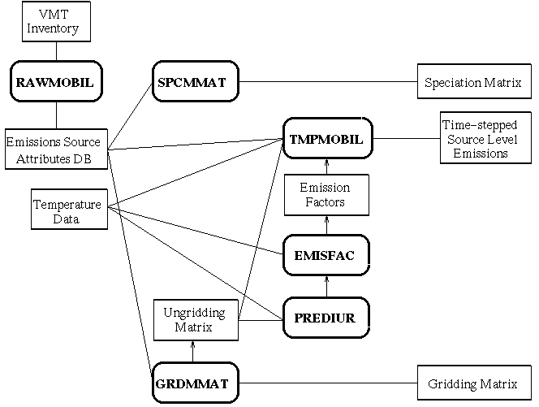
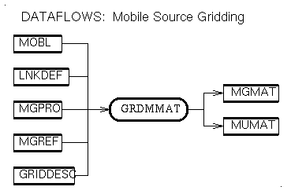
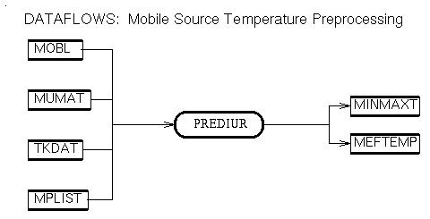
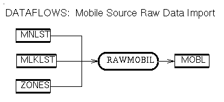
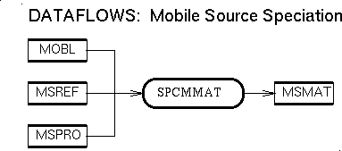
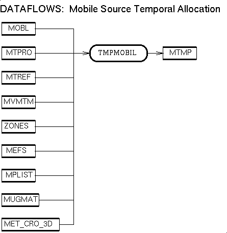

{kind=link}
{kind=link}
{kind=link}
{kind=link}
{kind=link}
{kind=link}
{kind=link}
{kind=link}
{kind=link}
{kind=link}
{kind=link}
{kind=link}
{kind=link}
{kind=link}
{kind=link}
{kind=link}
{kind=link}
{kind=link}
{kind=link}

Raw VMT input data
Typically, the
raw VMT data are available only as non-link data, that is, in a form which has
been aggregated by county and AIRS AMS road type
code. The AIRS AMS road class code can be replaced by the codes for area type and facility type (please refer to the table below
on that shows the relationship of these). VMT data may also be available as
link data. Links are straight road segments that by definition begin and end at
coordinates that may not cross a county boundary. SMOKE handles both forms of
input data. The format of these raw inputs can be found in the sections for the
MNLST and MLKLST files.
Emission factors created by MOBILE5
Emission factors are created in SMOKE using MOBILE5, for a wide variety
of exhaust and evaporative processes and pollutants. Some of the MOBILE5 inputs
parameters implement control strategies (e.g., inspection and maintenance (I/M)
programs, anti-tampering programs (ATPs), and reformulated gas (RFG) ). Other
MOBILE5 inputs define other factors contributing to the value of the emissions
factors, such as vehicle registrations (which help define the mix of different
vehicle types), fuel volatility parameters, speeds, and temperature. All of
these different dependencies cause mobile SMOKE to be more complicated than
other SMOKE component models.
Remaining steps
The remaining mobile source processing steps are speciation, temporal
allocation, projection of VMT (not yet supported by SMOKE), and gridding.
These are implemented using the standard emissions cross-reference and profile
approach in which each combination of county, road class, and link is
indirectly assigned a profile number by using a cross-reference file. A given
profile number is used to find the appropriate temporal profile, speciation
profile, etc., that transform the raw data using factors from the profiles.
Sources
SMOKE mobile sources are defined in two groups: link and non-link.
Both sources contribute vehicle-miles-traveled (VMT) to the "mobile inventory".
They are defined by the following attributes:
Temperature inputs
Because the MOBILE5
emission factors used by SMOKE are significantly influenced by temperature, the
most desirable approach from an accuracy standpoint is to model mobile
emissions using gridded, temporalized emissions from a meteorological model.
However, in order to retain the performance benfits of source-based SMOKE
processing, SMOKE has been designed to "ungrid" the temperatures to get a
source-based temperature. For processing of all kinds, SMOKE expects the a
gridded, temporalized surface-layer temperature file
TKDAT is available. In order to model emissions using a spatially or
temporally uniform temperature, the program
FAKETEMP must be used. This program can create the gridded, temporalized
file expected by SMOKE, but allows the user to make the temperatures uniform
either spatially, temporally, or both.
All of the emission factors depend on temperature in some way. The non-diurnal emission factors depend on a single temperature, which can be treated as a source-temperature for a given hour. They also depend on the minimum and maximum temperature per day, which in SMOKE, are treated as the minimum and maximum per source per day. The diurnal emission factors depend only on the minimum and maximum temperatures, and in SMOKE, are applied to the source-based VMT using the minimum and maximum temperatures per source per day.
Temperature ungridding
The
performance benefits of SMOKE processing can essentially by retained in mobile
processing through the use of "ungridded" temperatures. These temperatures are
created by averaging the temperatures in the grid cells intersecting the
source, weighted by the fraction of the source's area (for non-link sources)
or length (for link sources) intersecting with those grid cells. The
ungridding is implemented by building an "ungridding matrix" MUMAT, which must be created by
GRDMMAT early on in SMOKE processing.
Parameter Scheme Index (PSI)
Each emission factor created, managed, and applied by SMOKE has an associated
parameter scheme index (PSI). The PSI is then defined by 20 indices into
tables containing different input data types used by the MOBILE5 model. The
PSIs are defined in the MPREF file, the use of which
will be described in detail in other sections. A PSI can also be defined by
referencing other PSIs and specifying multipliers for each. For example, PSI
005 could be calculated from 50 percent of PSI 003 and 50 percent of PSI 002.
Altough complicated, the PSIs provide significant benefits, including (1)
permitting SMOKE to reduce the number of MOBILE5 runs for a given scenario, (2)
permit SMOKE to reuse MOBILE5 emission factors between scenarios, and (3)
permit the clear definitions of mobile control strategies.
Mobile control strategies
The PSIs
facilitate the clear definition of control strategies. Such definition is
important since SMOKE's speed creates the possibility of hundreds of
mobile-source control strategies to be run. The components of a control
strategy include all of the control features available in the MOBILE5 model,
such as inspection and maintenance programs, anti-tampering programs, and
reformulated gasoline. In addition, control strategies can be developed which
explore the mixing of emission factors from different regions in a single
region. For example, one could examine the impact of control programs in South
Carolina and Georgia on interstate roads in North Carolina. The record of the
control strategy definition is in the file containing the PSI definitions for a
given scenario.
Emission processes and emission types
Mobile SMOKE currently permits many, but not all, of the emissions-forming
processes modeled in the MOBILE5 used by SMOKE. The supported emission
processes are the following.
Because the EVP emissions are a sum of the WDL, HOT, and CRC emissions, it is not corrcect to use EVP and any of these three at the same time. Furthermore, since SMOKE does not yet permit input of trip information, using the HOT emission factors is incorrect as well. The recommended configuration is the following emission types: EXH_CO, EXH_NOX, EXH_VOC, EVP_VOC, RNL_VOC, RST_VOC, DNL_VOC. The list of all possible emission types is in the EMTLST variable in the MBDIMS3.EXT include file.
Generalized speciation
The SMOKE mobile processor takes a generalized speciation approach to
applying the speciation profiles. The inventory pollutants, model species, and
emission processes are all controled using the speciation list file
SPCS. The point, area, and biogenics processors will
all have this capability eventually, but do not at this time. In addition,
SMOKE needs to know about all possible inventory pollutants and model species,
and this information is defined in the
CHDGEN3.EXT include file.
Road Classes
Mobile source road class information is found in the INCLUDE file
MBDIMS3.EXT. Descriptions of the
road classes and their associated numeric codes are as follows:
| Name | AIRS AMS road type code | Area type code | Facility type code |
| Rural Interstate | 110 | 1 | 1 |
| Rural Principle Arterial | 130 | 1 | 2 |
| Rural Minor Arterial | 150 | 1 | 6 |
| Rural Major Collector | 170 | 1 | 7 |
| Rural Minor Collector | 190 | 1 | 8 |
| Rural Local | 210 | 1 | 9 |
| Urban Interstate | 230 | 0 | 1 |
| Urban Freeway | 250 | 0 | 2 |
| Urban Principle Arterial | 270 | 0 | 4 |
| Urban Minor Arterial | 290 | 0 | 6 |
| Urban Collector | 310 | 0 | 7 |
| Urban Local | 330 | 0 | 9 |
Vehicle Types
Mobile source vehicle type information is found in the INCLUDE file
MBDIMS3.EXT.
The vehicle types are described in the table below. The codes (e.g., 01 )
are used in the cross-reference files.
The following data flow diagram provides a conceptual overview of the mobile-source processing stages. (Details on the various items on the figure are given in the next section.)

A similar diagram is available in the following formats: in Postscript, in GIF, in X bitmap, and in JPEG.
In addition, diagrams giving an overview of the main line of SMOKE processing and how mobile source processing fits into that whole are available for UAM air quality modeling in Postscript, in GIF, in X bitmap, and in JPEG; and also for EDSS air quality modeling in Postscript, in GIF, in X bitmap, and in JPEG. Note that additional options for analysis and quality assurance processing are detailed in the diagrams on mobile source processing.
If raw VMT inputs are used: . RAWMOBIL program: Reads in all of the raw VMT data and other source characteristics for link and non-link sources
Both the MNLST and MLKLST files are optional, but at least one is needed for each run.
If EPS2.0 raw inputs are used, then you will have to wait for the EPSMOBIL processor.
Data flow diagrams for the data preparation and import of mobile source processing are available in Postscript, in GIF, in X bitmap, and in JPEG.
The speciation profiles are matched to the source- level emissions using the cross- reference file. The following source characteristics are used to apply these profiles: State and County FIPS code, AIRS AMS road type code, link ID (uses stack portion of file format), vehicle type and emission type. The cross- reference can be created to apply profiles using defaults at any of these levels.
The volatile conversion factors are used only if the speciation profiles for the volatile inventory pollutant are for a pollutant other than the that in the inventory. The need for this file is determined at run time automatically by the program. The volatile pollutant that the program will expect on input is determined at run time by the SPCS input file.
Data flow diagrams for speciation matrix construction are available in Postscript, in GIF, in X bitmap, and in JPEG.
The gridding surrogates are matched to the source- level VMT and/or emissions using the cross- reference file. The following source characteristics are used to apply these surrogates: State and County FIPS code, road class. The surrogates are not used, of course, for link sources.
Three types of gridding methods are used. Sources which are explicit links are gridded/ungridded by computing intersections between the grid cells and the link (so that if half of the length of a link lies in a particular cell, for example, half of the VMT and half of the emissions due to the link are allocated to that cell). For those counties and road classes for which LNKDEF supplies a listing of the road link coordinates, the links are intersected with the grid cells, and VMT and emissions are gridded/ungridded on the basis of the accumulated fractions of link length. For all other sources, the allocation is performed on the basis of surrogate coefficients assigned to sources using the cross reference file.
Data flow diagrams for gridding matrix construction are available in Postscript, in GIF, in X bitmap, and in JPEG.
Data flow diagrams for the pre-processing for diurnal emission factors are available in Postscript, in GIF, in X bitmap, and in JPEG.
This program can be configured to run using either MOBILE5a (version 1) or MOBILE5b. This choice must be made at compile- time.
If the user wishes to use the MOBILE5 input file format directly, the MPREF file is the input file that must contain these inputs. The user can concatonate these input files, and make some small modifications to the top of each input file segment, as described in the MPREF file documentation.
The EMISFAC output files are valid for only one year of emission factors, therefore, it is recommended that the user maintain one set of files for each year being modeled. This can be done by using the update feature of the program, instead of creating a new set of outputs for each run. Some users may wish to maintain a set of emission factor output files for each scenario. This is permitted, but may decrease total emissions processing performance, since no emission factors from the previous scenario can be reused.
Data flow diagrams for the processing of emissions factors are available in Postscript, in GIF, in X bitmap, and in JPEG.
The temporal profiles are matched to the source- level emissions using the cross- reference file. The following source characteristics are used to apply these profiles: State and County FIPS code, AIRS AMS road type code, link ID (uses stack portion of file format), vehicle type, and emissions process.
The emission factors are matched to the source- level VMT using the MPLIST file. The following source characteristics are used to apply the emission factors: State and County FIPS code, AIRS AMS road type code, link ID, and hour.
The VMT Mix records are matched to the source- level VMT using the MVMTM file. The following source characteristics are used to apply the VMT mix to the aggregate VMT: inventory year, State and County FIPS code, AIRS AMS road type code, link ID.
Data flow diagrams for temporal allocation are available in Postscript, in GIF, in X bitmap, and in JPEG.
Data flow diagrams for applying control strategies are available in Postscript, in GIF, in X bitmap, and in JPEG.
Three-dimensional air quality modeling inputs merged with other source
types
The CSGLMERGE and CSGLDAYMRG programs are used to build
three-dimensional air quality modeling inputs, appropriate for use in MAQSIP or SAQM. These program read
all of the component files from the area, point, mobile, and biogenics
processing stages, and create a single merged output file, EMIS3D or
EMISC3D.
The utility program SMK2SAQM must be used to
convert the three-dimensional output file to the format expected by the
SAQM model.
The EMIS3D file can be read by the PAVE visualization package, but the SAQM file cannot.
Two-dimensional air quality modeling inputs merged with other source
types (UAM)
The CSGMERGE program is similar to the
programs just described for three-dimensional output, but produces a
two-dimension (single-layer) emissions output file. This program reads all of
the component files from the area, point, mobile, and biogenics processing
stages, and creates a single merged output file, EMIS2D or
EMISC2D. This
program is used for UAM-style processing, which separates the air quality
emissions input files into two files: an elevated and a non-elevated file.
The CSGMERGE program creates the
non-elevated file. In order to convert the EMIS2D file to the
'EMISSIONS' file format expected by the UAM, the
SMK2EMIS utility routine must be used. For more information, refer to
the documentation for the individual programs and for merge processing.
The EMIS2D file can be read by the PAVE visualization package, as can the output from SMK2EMIS
Two-dimensional gridded, hourly, model species emissions
The CSGMOBIL program can be used to generate
a gridded, model species, hourly mobile-source-only emissions files. The
program reads the hourly inventory pollutants file MTMP, the gridding matrix
MGMAT, and the speciation matrix MSMAT. The
outputs from this program can be useful for both analysis and quality
assurance purposes, but they are not essential to preparing emissions
inputs for air quality modeling. This progam outputs the MGTS file
(Mobile gridded, hourly, model species), which can be read by the PAVE visualization package.
Gridded, (hourly) inventory pollutant emissions
The GRDMOBIL program can be used to generate
a gridded VMT data or hourly inventory pollutant mobile-source-only
emissions files. The program reads either the inventory file MOBL or the hourly emission types file MTMP, and the gridding matrix
MGMAT. The outputs from this program can be useful for both analysis
and quality assurance purposes, but they are not essential to preparing
emissions inputs for air quality modeling. Depending on the input files,
this progam outputs the following files:
Data flow diagrams for generation of gridded, optionally speciated, optionally temporally allocated mobile source emissions are available in Postscript, in GIF, in X bitmap, and in JPEG.
| Description | Processing Order | Input Files | Input Params | Input Envt Vars |
| Output Files | Include File Params | Upcoming Features | Known Bugs | Usage |
MOBILE model. Currently EMISFAC can be compiled to use either MOBILE5a or MOBILE5b. Small modifications have been made to both based on the Lake Michigan Ozone Study (LMOS) changes. These changes ensure that the evaporative emission factors no longer have a diurnal component, which permits additive operations on the evaporative emission and the diurnal emissions without double counting. Additional changes have been made so that EMISFAC can better interface with MOBILE to manage the emission factor simulations.
Parameter Scheme Index. An important concept in mobile emissions modeling is the Parameter Scheme Index (PSI). The PSIs represent a unique combination of MOBILE inputs. For example, one PSI could be used for all counties in a state with inspection and maintenance (I/M) programs, and another PSI for all counties with I/M programs. The counties without I/M programs would be assigned the PSI associated with the non-I/M MOBILE inputs, and the counties with I/M programs assigned the PSI associated with the I/M MOBILE inputs. The MOBILE parameters cross-reference file, MPREF, is used to associate the PSIs with the MOBILE inputs (this is the file in which the user can put all of the MOBILE input files, for example). The simulation-specific emission factors cross- reference file, MPLIST, is used to associate the PSIs (hence the emission factors) to the mobile sources. The PSIs in MPLIST must be a sub-set of the PSIs in MPREF
Efficiencies. EMISFAC has greater efficiency than other methods of emission factor processing, which stems from the use of the PSI, and which is embodied in the input and output configuration of the program. EMISFAC outputs two files containing emission factors: a diurnal emission factors file, MEFSD, and a non-diurnal emission factors file, MEFSND. The emission factors are stored in these files for each PSI in MPREF, for all vehicle types, and for all temperatures.
These files are intended to be "master lists" of emission factors, and used for many different strategy run; therefore, one efficiency is being able to reuse the emission factors in these files for many different runs. Since the MPREF stores the definitions of all of the emission factors in MEFSD and MEFSND, there is always a record of what these emission factors represent. When new emission factors need to be added, or existing ones need to be corrected, the user can update these files instead of generating new files.
EMISFAC can reduce the number of MOBILE runs not only by permitted reuse and updating, but also by running MOBILE for only those speeds required in the definitions of the PSIs and for a limited number of temperatures. The treatment of temperatures is explained in more detail below.
Finally, EMISFAC has efficiency by permitting users to recycle emission factors. Implementation of this is described in the section about MPREF, but in general, this feature allows users to create a new PSI based on a combination of other PSIs. Such treatment can be useful when the emissions modeler knows the percentages of VMT in one county contributed by vehicles from other counties that have different emission factors.
Temperatures. The processor has been designed to limit the number of temperatures for which MOBILE must be run. Temperatures are treated differently for diurnal and non-diurnal EFs. In order to calculate diurnal EFs, requires outputs from PREDIUR that give information on the minimum/maximum temperatures for all days in the run for each EF. For non-diurnal EFs, EMISFAC requires a run-time-specified starting and ending temperature (in degree F) for which EFs are to be calculated. It then calculates all EFs on a 2 degree F increment over that interval. Note that when the user inputs MOBILE files directly, the temperatures in this file are ignored.
A similar diagram is also available in Postscript, in GIF, in X bitmap, and in JPEG.
If problems other than those on this list are found, please report to
smoke@mcnc.org# # set up environment variables (logical names) of input files: # setenv MO5AIN <path-name for temporary MOBILE5a input file> setenv MEFSD <path-name for master diurnal EF file> setenv MEFSND <path-name for master non-diurnal EF file> setenv MEFTEMP <path-name for minimum/maximum temperature per PSI file> setenv MPLIST <path-name for parameter scheme list> setenv MPREF <path-name for general MOBILE5a parameter x-ref file> setenv MACUM <path-name for mileage accumulation rates profiles file> setenv MAVSPD <path-name for average speeds profiles file> setenv MBSEXH <path-name for basic exhaust emissions rates profiles file> setenv MCTOFF <path-name for cutoffs point records for I/M 240> setenv MDLSF <path-name for diesel fuels sales fractions profiles file> setenv MEFATP <path-name for anti-tampering programs effects profiles file> setenv MEFIM <path-name for inspection and maintanence programs effects profiles file> setenv MEFLEV <path-name for LEV program effects profiles file> setenv MEFRFL <path-name for refueling controls parameters profiles file> setenv MLAPMO <path-name for LAP/ month profiles file> setenv MLOAD <path-name for A/C usages, extra loading, trailer, humidity effects profiles file> setenv MNEVAP <path-name for new evaporative emissions tests profiles file> setenv MOPMOD <path-name for operating modes profiles file> setenv MOXYF <path-name for oxygenated fuels parameters profiles file> setenv MRGDS <path-name for functional pressure test profiles file> setenv MPREST <path-name for functional purge test profiles file> setenv MPURGT <path-name for registration distributions profiles file> setenv MTLEN <path-name for trip length distribution profiles file> setenv MTRATE <path-name for tampering rates profiles file> # # now run the program, using a here-document to supply the input (note, the # command-line inputs to this program vary depending on the characteristics # of a specific scenario). # emisfacl << EOF Yes, continue with the program MO5AIN ! Temporary MOBILE5a input file NONE ! Non-diurnal master list file or none NONE ! Diurnal master list file or none MEFTEMP ! EF-based min/max temperature file MPLIST ! Simulation-specific parameter scheme list MPREF ! general MOBILE5a parameter x-ref file 1988 ! modeling year VOC ! type of hydrocarbon emission desired 55. ! start temperature in deg F 105. ! end temperature in deg F MEFSND ! Non-diurnal master list file MEFSD ! Diurnal master list file MLAPMO ! LAP/month records index MOPMOD ! Operating modes for all vehicle types EOF # # done #
| Description | Processing Order | Input Files | Input Params | Input Envt Vars |
| Output Files | Include File Params | Upcoming Features | Known Bugs | Usage |
Ungridding.The performance benefits of SMOKE processing can essentially by retained in mobile processing through the use of "ungridded" temperatures. These temperatures are created by averaging the temperatures in the grid cells intersecting the source, weighted by the fraction of the source's area (for non-link sources) or length (for link sources) intersecting with those grid cells.
Gridding. Three types of gridding methods are used. Sources which are explicit links are gridded/ungridded by computing intersections between the grid cells and the link (so that if half of the length of a link lies in a particular cell, for example, half of the VMT and half of the emissions due to the link are allocated to that cell). For those counties and road classes for which LNKDEF supplies a listing of the road link coordinates, the links are intersected with the grid cells, and VMT and emissions are gridded/ungridded on the basis of the accumulated fractions of link length. For all other sources, the allocation is performed on the basis of surrogate coefficients assigned to sources using the cross reference file.
Gridding surrogates. Gridding surrogates are used to transform the county-based (non-link) sources to a gridded domain. These surrogates are factors that indicate the fraction of a source (county) should be allocated to each grid cell. There are many different types of surrogates. The most simple is the "area" surrogate, which is simply the fraction of the are from each county that intersects with the grid cells overlapping that county. Other surrogates commonly used for mobile emissions processing are the "major highways" surrogate and the "population" surrogate. Gridding cross-reference usage. The gridding cross-reference file describes which gridding surrogates are to be used for specific sources or types of sources. GRDMMAT permits the assigning of surrogates to sources based on the state and county FIPS code and the road class. A hierarchical system is used to apply the surrogates in which the most specific assignments are applied first, followed by the next most specific, etc. For example, the cross-reference file could have a default set for all counties and road classes to use population as a surrogate, but a handful of counties and road classes to use major highways.

A similar diagram is also available in Postscript, in GIF, in X bitmap, and in JPEG formats.
GRDMMAT reports the total number of coefficients in the gridding and ungridding matrices, and the maximum, minimum, and mean numbers of sources per cell in the gridding matrix and cells per source in the ungridding matrix. It can be run with output file logical names set to "NONE", in order to find out the maximum numbers, for use in dimensioning the work arrays used internally for computing the gridding matrix.
In case the dimensioning for the matrix or for internal work arrays is insufficient, GRDMMAT will recognize and report the fact to the program log; in that case, the user needs to increase the dimensioning by changing the appropriate PARAMETER statements and re-compile the relevant parts of SMOKE.
If problems other than those on this list are found, please report to
smoke@mcnc.org# # set up environment variables (logical names) of input files: # setenv GRIDDESC <path-name for grid definitions file> setenv LNKDEF <path-name for link definitions file> setenv MGREF <path-name for surrogate cross-reference file> setenv MGPRO <path-name for surrogate coefficient file> setenv MOBL <path-name for area source inventory file> setenv MGMAT <path-name for output gridding matrix> setenv MUMAT <path-name for output ungridding matrix> # # now run the program, using a here-document to supply the input: # grdmmat << EOF Yes, continue with the program MOBL ! logical name of mobile source inventory file MGREF ! " " for surrogate cross-reference file MGPRO ! " " surrogate coefficient file LNKDEF ! " " link definitions file, or "NONE" MGMAT ! " " output gridding matrix, or "NONE" MUMAT ! " " output ungridding matrix, or "NONE" EOF #
| Description | Processing Order | Input Files | Input Params | Input Envt Vars |
| Output Files | Include File Params | Upcoming Features | Known Bugs | Usage |
Definition of a "day". PREDIUR seeks to obtain the minimum and maximum temperature for a source for each day, which is necessary for processing diurnal emissions. However, the definition of a "day" differs for sources in different time zones. Instead of trying to determine the different days for the different sources, PREDIUR bases each source's "day" on the GMT time zone. If the sources of interest are in time zones other than GMT, this is okay for all U.S, time zones, as the 4 to 9 hour difference will have a small impact on the determination of minimum and maximum daily temperatures, because the maximum daily temperature typically occurs in mid-afternoon, and the minimum daily temperature typically occurs in the early morning hours.
Time zone for input temperatures. The program assumes that the time zone of the temperature data is GMT. If the available temperature data are not in GMT, the m3tshift IO/API program can be used to convert the temperature data.
Minimum/Maximum range and increment. Only certain minimum and maximum combinations are allowable in SMOKE, depending on the parameters defined at compile time in the INCLUDE file MBDIMS3.EXT . A mimimum for the minimum temperatures (MINT_MIN), maximum for the minimum temperatures (MINT_MAX), minimum for the maximum temperatures (MAXT_MIN), maximum for the maximum temperatures (MAXT_MAX), and a temperature interval (TINTV) are all set in the INCLUDE file. These parameters should be set prior to compiling SMOKE, depending on the actual range expected during mobile emissions processing. The values of these parameters are constrained by the limitations of MOBILE5 such that the minima must be between 0 degrees F and 100 degrees F, and the maxima must be between 10 degrees F and 110 degrees F.
Minimum/Maximum Indexing. In SMOKE, a sequential index code for each min/max temperature combination is assigned by sorting all temperature combinations with maximum temperature cycling fastest. All combinations are retained in this sorted order, including combinations that do not make sense (such as min=60 and max=50), and the index to each of these combinations is set to its placement in the sorted list. These indices are assigned to each source and written to the MINMAXT file. If the actual min/max for the source violates any of the constraints of MOBILE5 (such as max - min > 40 degrees F) or if the minimum and/or maximum is outside the compile-time range, a warning is written to standard I/O and the nearest valid index number is assigned. These index codes are also used to summarize the min/max temperature combinations needed for each PSI (see MPREF), and this information is stored in the MEFTEMP file.

A similar diagram is also available in Postscript , in GIF , in X bitmap , and in JPEG formats.
In case the dimensioning for the matrix or for internal work arrays is insufficient, PREDIUR will recognize and report the fact to the program log; in that case, the user needs to increase the dimensioning by changing the appropriate PARAMETER statements and re-compile the relevant parts of SMOKE.
If problems other than those on this list are found, please report to
smoke@mcnc.org# # set up environment variables (logical names) of input files: # setenv MOBL <path-name for SMOKE mobile source annual inventory file> setenv MUMAT <path-name for mobile source ungridding matrix file> setenv TKDAT <path-name for surface temperature file> setenv MPLIST <path-name for emissions simulation-specific x-ref list> setenv MEFTEMP <path-name for minimum/maximum temperature per PSI file> setenv MINMAXT <path-name for ungridded min/max temperature file> # # now run the program, using a here-document to supply the input (note, the # command-line inputs to this program vary depending on the characteristics # of a specific scenario). # prediur << EOF Yes, continue with the program MOBL ! mobile source annual inventory file MUMAT ! ungridding matrix file TKDAT ! surface temperature file MPLIST ! emissions simulation-specific x-ref list 1988200 ! starting date, YYYYDDD or YYYYMMDD 000000 ! starting time, HHMMSS 24 ! output duration (hours) MINMAXT ! ungridded min/max temperature file MEFTEMP ! EF-based min/max temperature file EOF # # done #
| Description | Processing Order | Input Files | Input Params | Input Envt Vars |
| Output Files | Include File Params | Upcoming Features | Known Bugs | Usage |
Multiple Raw VMT Input Files. The program can read source data from many individual link and non-link VMT input files by using special input files that list these raw data files. These files are MNLST and MLKLST. These files are also used to set the inventory year for each of the individual input files (see the sections on MNLST and MLKLST for more information). The current version of mobile SMOKE supports the use of only the same inventory year for all input files, because VMT projection has not yet been added to the system.
Input format. For the input format of the files for this program, please refer to the sections on MNLST (non-link raw data input format) and MLKLST (link raw data input format) .
Units of input data. The SMOKE system expects that VMT data are in units of miles/day. This "day" can take many forms, depending on the intention of the user and the temporal adjustments applied in latter processing stages. For example, the day could be average annual day, average summer day, or peak July day.

(This diagram is also available in Postscript , in GIF , in X bitmap , and in JPEG formats.)
In case the dimensioning for the matrix or for internal work arrays is insufficient, RAWMOBIL will recognize and report the fact to the program log; in that case, the user needs to increase the dimensioning by changing the appropriate PARAMETER statements and re-compile the relevant parts of SMOKE.
# # set up environment variables (logical names) of input files: # setenv MNLST <path-name for mobile main raw data files list;> setenv MLKLST <path-name for mobile link-specific VMT data files list;> setenv ZONES <path-name for time-zone-to-FIPS file;> setenv MOBL <path-name for SMOKE mobile source file;> # # now run the program, using a here-document to supply the input: # rawmobil << EOF Yes, continue with the program ZONES ! time-zone-to-FIPS file 17 ! UTM zone for output link sources MLKLST (or "NONE") ! link sources input data file list MNLST (or "NONE") ! non-link sources input data file list MOBL ! output inventory file EOF # # done #
| Description | Processing Order | Input Files | Input Params | Input Envt Vars |
| Output Files | Include File Params | Upcoming Features | Known Bugs | Usage |
Generalized speciation. This program is capable of setting the model species that will be output at run-time. This is controlled by the speciation list file SPCS. For more information on generalized speciation, please refer to the mobile-specific concepts section.
Volatile conversions. In some cases, the volatile pollutant in the inventory is not the same as the volatile pollutant for which the volatile speciation profiles, MSPRO, are available. SMOKE will permit these disparate inputs to be used, but an additional input is required that contains factors to convert the volatile inventory pollutant to that of the profile. This additional input is known as the volatile conversion factors file, MSCNV.
Speciation cross-reference usage. The speciation cross-reference file describes which speciation profiles are to be used for transforming the volatile inventory pollutant to the volatile model species for specific sources or types of sources. SPCMMAT permits the assigning of profiles to sources based on the state and county FIPS code, the road class, the link ID, the vehicle type, and the emissions process. A hierarchical system is used to apply the profiles in which the most specific assignments are applied first, followed by the next most specific, etc. For example, the cross-reference file could have all of one state to use one profile, but diurnal emissions processes in that state would use another profile.

A similar diagram is also available in Postscript, in GIF, in X bitmap, and in JPEG
In case the dimensioning for the matrix or for internal work arrays is insufficient, SPCMMAT will recognize and report the fact to the program log; in that case, the user needs to increase the dimensioning by changing the appropriate PARAMETER statements and re-compile the relevant parts of SMOKE.
# # set up environment variables (logical names) of input files: # setenv MOBL <path-name for area source inventory file> setenv MSCNV <path-name for volatile conversion factors file> setenv MSMAT <path-name for output speciation matrix> setenv MSPRO <path-name for speciation profile file> setenv MSREF <path-name for speciation cross-reference file> setenv SPCS <path-name for speciation list file> # # now run the program, using a here-document to supply the input: # spcmmat << EOF Yes, continue with the program MOBL ! area source inventory file MSREF ! speciation cross-reference file MSPRO ! speciation profile (coefficient) file SPCS ! speciation list file MSCNV ! volatile conversion file (optional) MSMAT ! output speciation matrix EOF #
| Description | Processing Order | Input Files | Input Params | Input Envt Vars |
| Output Files | Include File Params | Upcoming Features | Known Bugs | Usage |
Application of VMT Mix. Each FIP/roadclass- or link-based source has all of the VMT for all vehicle types. In order to apply emission factors based on vehicle type, the VMT must be disaggregated to the vehicle types using fractions known as the VMT mix. The VMT mix is applied using the MVMTM file, which has both the cross-reference information and the VMT mix percentages. Currently, SMOKE does not permit the VMT mix to vary by date or hour, but does permit it to vary by year. This limitation will be updated to include hour-specific VMT mix percentages on a need basis.
Interpolation of emission factors. During processing, the emission factor values used for a given source/ vehicle type/emission type is estimated for an exact temperature from the emission factors calculated at the surrounding temperatures on the even increment.
For example, given a temperature range starting at 50 degrees F and an increment of 2 degrees F, a non-diurnal factor required at 77.5 would be linearly interpolated from the factors calculated (by EMISFAC) at 76 and 78 degrees F.
Diurnal emission factors require four factors for a two-dimensional linear interpolation. Given a minimum-minimum and minimum-maximum of 50 degrees F and a 2 degree F interval, suppose an emission factor is required at minimum = 77.5 and maximum = 99.5. The four diurnal emission factors that would be needed are at [min,max] temperatures of [76,98], [78,98], [76,100], and [78,100].
Temporal cross-reference matching. In case of missing entries in the temporal cross reference file, TMPMOBIL first looks for cross reference entries for other vehicle types or emission processes at the same level in the search hierarchy before descending to the next level in the hierarchy. For example, if a source has a temporal cross reference entry for vehicle type LDGV but not for HDDV, TMPMOBIL will use the source-specific LDGV temporal cross reference entry for allocating VMT for HDDV from that source in preference to using a spatially-less-specific default HDDV temporal profile. Using the cross-reference, the temporal profiles can be applied by state and county FIPS code, AIRS AMS road type code, link ID, vehicle type, and emissions type.

A similar diagram is also available in Postscript, in GIF, in X bitmap, and in JPEG.
The practical implication of this is that Sunday June 1st starts _not_ at the output time zone's "Sunday" and "June", but at each source's "Sunday" and "June". For example, setting this variable to 'N' means that the start of North Carolina's Sunday is the same as the start of England's Sunday, if we were processing in GMT. With this variable set to 'Y', England and NC start their respective Sundays and Junes 5 hours (or 4 hours during daylight savings) apart. In addition, Missouri (in the central time zone) starts it's Sunday one hour after that in North Carolina.
In case the dimensioning for the matrix or for internal work arrays is insufficient, TMPMOBIL will recognize and report the fact to the program log; in that case, the user needs to increase the dimensioning by changing the appropriate PARAMETER statements and re-compile the relevant parts of SMOKE.
# setenvs for logical file names: # setenv MEFSD <path-name for diurnal emissions factors file> setenv MEFSND <path-name for non-diurnal emissions factors file> setenv MINMAXT <path-name for ungridded min/max temperature file> setenv MOBL <path-name for SMOKE mobile source annual inventory file> setenv MPLIST <path-name for emissions simulation-specific x-ref list> setenv MTMP <path-name for mobile source time stepped emissions file> setenv MTPRO <path-name for mobile source temporal profile file> setenv MTREF <path-name for mobile source temporal cross reference file> setenv MUMAT <path-name for mobile source ungridding matrix file> setenv MVMTM <path-name for mobile source VMT mix profiles file> setenv SPCS <path-name for speciation list file> setenv TKDAT <path-name for surface temperature file> # # Now run the program, using a here-document for input: # spcpmat << EOF Yes, continue with the program MOBL ! mobile source annual inventory file MEFSND ! non-diurnal emissions factor file MEFSD ! diurnal emissions factor file TKDAT ! surface temperature file MUMAT ! ungridding matrix file MINMAXT ! ungridded min/max temperature file MVMTM ! mobile source VMT mix profiles file MPLIST ! emissions simulation-specific x-ref list MTREF ! temporal cross reference file MTPRO ! temporal profile file SPCS ! speciation list file 5 ! time zone for output file 1988200 ! starting date, YYYYDDD or YYYYMMDD 000000 ! starting time, HHMMSS 121 ! output duration (hours) MTMP ! time stepped mobile source emissions file EOF # # done #
Sequence: Optional Input
Type: ASCII
Origin: User preparation
Used by: GRDMMAT program
Summary: This file is used to allocate non-link mobile sources to grid cells based on the links in a given county. This file must contain all links for a county and road class if it contains any links for that county and road class.
Structure: Column-specific
| Line | Columns | Description |
|---|---|---|
| 1+ | 1-5 | FIPS state and county code |
| 6-10 | AIRS AMS road type code | |
| 11-20 | UTM Easting coordinate of beginning of link | |
| 21-30 | UTM Northing coordinate of beginning of link | |
| 31-40 | UTM Easting coordinate of end of link | |
| 41-50 | UTM Northing coordinate of end of link | |
| 51-60 | UTM zone |
Sequence: Optional intermediate
Type: NetCDF
Origin: CTLMMAT program
Used by: CSGMERGE, CSGLMERGE, or CSGLDAYMR programs
Summary: This file does not yet exist because the program that will create it, CTLMMAT, does not yet exist.
Sequence: Intermediate
Type: NetCDF
Origin: EMISFAC program
Used by: TMPMOBIL program
Summary: The MEFSD file contains the diurnal emission factors from MOBILE5a or MOBILE5b. These emission factors are used to convert VMT to emissions. Each variable in the file cooresponds to a type of emission factor, and contains emission factors from many different PSIs and for many different minimum/maximum temperature combinations. Because EMISFAC only creates the diurnal emission factors for the minimum/maximum temperature combinations that have been encountered in a given meteorological episode, the variables often contain many missing records to hold a place for these.
Even if all of the emission types are not used in a given invocation of SMOKE, all of the diurnal emission factors that SMOKE can use are stored in this file. This permits the user to change the emission factors being used (but not the volatile pollutant type), without having to rerun EMISFAC. Actually, EMISFAC even stores one emission factor that SMOKE can't use: the weighted diurnal emission factor. SMOKE can't use this because it's units are in grams instead of grams/mile, but it is stored for future version of SMOKE that may be able to use this factor.
Header:
| Header variable | Meaning | Set by... |
|---|---|---|
| SDATE | The YYYY portion of the Julian starting date indicates the date for which the emission factors have been created. Only one year is permitted per file. | User at run time |
| TSTEP | The time step is set to 1 second. Each PSI is stored in a different "time step" of the file. For example, PSI 10 is stored in the tenth second, or at HHMMSS 000010; PSI 200 is stored in the 200th second, or at HHMMSS 000320 (three minutes, 20 seconds). Because of this file storage method, and because NetCDF writes missing values for time steps that are not present in the file, the lower the PSI numbers are, the smaller the file will be. | Default |
| NCOLS | The number of columns stores the length of the minimum/maximum temperature combinations array. | Parameter NMINMAX in MBDIMS3.EXT |
| NROWS | The number of rows stores the number of vehicle types, as emission factors for each vehicle type need to be stored individually. | Parameter NVTYPE in MBDIMS3.EXT |
| XORIG | The X-origin field stores the negative of the starting lowest minimum temperature used. | Parameter MINT_MIN in MBDIMS3.EXT |
| XCELL | The x-direction cell size field stores the temperature interval | Parameter TINTV in MBDIMS3.EXT |
| Variable | Type | Units | Description |
|---|---|---|---|
| WDL_THC or WDL_NMH or WDL_VOC or WDL_TOG or WDL_NMO | Float | grams | Weighted diurnal emission factor |
| DNL_THC or DNL_NMH or DNL_VOC or DNL_TOG or DNL_NMO | Float | grams/mile | Diurnal emission factor |
| HOT_THC or HOT_NMH or HOT_VOC or HOT_TOG or HOT_NMO | Float | grams/mile | Hot soak diurnal emission factor |
| CRC_THC or CRC_NMH or CRC_VOC or CRC_TOG or CRC_NMO | Float | grams/mile | Crank case diurnal emission factor |
Sequence: Intermediate
Type: NetCDF
Origin: EMISFAC program
Used by: TMPMOBIL program
Summary: The MEFSND file contains the non-diurnal emission factors from MOBILE5a or MOBILE5b. These emission factors are used to convert VMT to emissions. Each variable in the file cooresponds to a type of emission factor, and contains emission factors from many different PSIs and for many different temperatures. EMISFAC creates emission factors for all temperature using a run-time defined range, and compile-time defined temperature increment. See the EMISFAC documentation for more information.
Even if all of the emission types are not used in a given invocation of SMOKE, all of the non-diurnal emission factors that SMOKE can use are stored in this file. This permits the user to change the emission factors being used (but not the volatile pollutant type), without having to rerun EMISFAC.
Header:
| Header variable | Meaning | Set by... |
|---|---|---|
| SDATE | The YYYY portion of the Julian starting date indicates the date for which the emission factors have been created. Only one year is permitted per file. | User at run time |
| TSTEP | The time step is set to 1 second. Each PSI is stored in a different "time step" of the file. For example, PSI 10 is stored in the tenth second, or at HHMMSS 000010; PSI 200 is stored in the 200th second, or at HHMMSS 000320 (three minutes, 20 seconds). Because of this file storage method, and because NetCDF writes missing values for time steps that are not present in the file, the lower the PSI numbers are, the smaller the file will be. | Default |
| NCOLS | The number of columns stores the maximum length of the temperature array. | Parameter MAXTMP in MBDIMS3.EXT |
| NROWS | The number of rows stores the number of vehicle types, as emission factors for each vehicle type need to be stored individually. | Parameter NVTYPE in MBDIMS3.EXT |
| XORIG | The X-origin field stores the negative of the lowest run-time temperature used. | User at run time |
| XCELL | The x-direction cell size field stores the temperature interval | Parameter TINTV in MBDIMS3.EXT |
| Variable | Type | Units | Description |
|---|---|---|---|
| EXH_CO | Float | grams/mile | Exhaust CO emission factor |
| EXH_NOX | Float | grams/mile | Exhaust NOX emission factor |
| EXH_THC or EXH_NMH or EXH_VOC or EXH_TOG or EXH_NMO' | Float | grams/mile | Exhaust volatile pollutant emission factor |
| EVP_THC or EVP_NMH or EVP_VOC or EVP_TOG or EVP_NMO | Float | grams/mile | Non-diurnal evaporative emission factor |
| RNL_THC or RNL_NMH or RNL_VOC or RNL_TOG or RNL_NMO | Float | grams/mile | Running loss evaporative emission factor |
| RST_THC or RST_NMH or RST_VOC or RST_TOG or RST_NMO | Float | grams/mile | Resting loss evaporative emission factor |
| RFL_THC or RFL_NMH or RFL_VOC or RFL_TOG or RFL_NMO | Float | grams/mile | Refueling loss evaporative emission factor |
Sequence: Intermediate
Type: ASCII
Origin: PREDIUR program
Used by: EMISFAC program
Summary: MEFTEMP contains all minimum/maximum temperature indices TMMI (see MINMAXT for more information on TMMI codes) for a given temperature input file TKDAT and a given scenario- specific set of emission factors from MPLIST.
| Line | Columns | Description |
|---|---|---|
| 1+ | A | PSI code |
| B | Number of TMMI codes for this PSI | |
| C(1) ... C(N) | TMMI(1) ... TMMI(N) |
NOTE: Entries with more than 20 TMMI codes are continued on a new line.
Sequence: Optional Input
Type: ASCII
Origin: User preparation
Used by: EMISFAC program
Summary: The MEFUPD file is used to control the EMISFAC program. When the user needs emission factors for specific PSIs to be updating in a MEFSD or MESFND file that already exists, and the default behavior of EMISFAC will not update those PSIs, this file can be used to instruct EMISFAC to update those PSIs. This updating feature is most useful for correcting PSIs when they were inadvertently created with incorrect MOBILE5 inputs.
| Line | Columns | Description |
|---|---|---|
| 1+ | A | Starting and ending PSI separated by a dash, or single PSI value |
051-055
063
067-075
Sequence: Intermediate
Type: IO/API NetCDF
Origin: GRDMMAT program
Used by: GRDMOBIL, CSGMOBIL, CSGMERGE, CSGLMERGE, or CSGLDAYMRG programs.
Summary: The MGMAT gridding matrix is used to transform source- based emissions to grid cell- based emissions. The rows of the matrix correspond to the mobile sources (with the rows sorted in the same order as the sources in the MOBL file. The columns of the matrix correspond to the grid cells, and because each source intersects only a few grid cell, this matrix is very sparse (has a lot of zeroes). Where a grid cell and source do intersect, the gridding factor is stored in this matrix, along with it's position in the matrix , but the zero values are not stored (this is called sparse storage).
The number of sparse-matrix coefficients, NCOLS3D, is NMATX, and the number of matrix rows NROWS3D is NGRID. Both are defined in GRDIMS3.EXT ; MGMAT has one application-supplied variable, the sparse matrix coefficient table, in addition to the sparse matrix indexing data structures:
Sequence: Input
Type: ASCII
Origin: User preparation
Used by: GRDMMAT program
Summary: MGPRO is used by program GRDMMAT to construct the MGMAT and MUMAT gridding and ungridding matrix files. If the EMS95- formatted surrogates are available, the SAS program mvgrd2smoke.sas can be run in the EMS-95 system in order to reformat the grdtiger.mv file to a format close to that expected by SMOKE (doesn't have the header).
Structure: Column-specific based on columns, below. All lines after line 1 must be in sorted order by FIPS code and cell coordinates.
| Line | Columns | Description |
|---|---|---|
| 1 | 1-10 | Minimum East-West coordinate in units of output grid projection |
| 11-20 | Minimum North-South coordinate in units of output grid projection | |
| 21-30 | Maximum East-West coordinate in units of output grid projection | |
| 31-40 | Maximum North-South coordinate in units of output grid preojection | |
| 41-50 | Number of surrogates in file (NOTE: Not UTM zone as in EPS file format) | |
| 51-60 | East-West cell size in units of output grid projection | |
| 61-70 | North-South cell size in units of output grid projection | |
| 2+ | 1-5 | State and County FIPS code |
| 6-15 | Minimum East-West coordinate of lower left corner of grid cell OR grid column number | |
| 16-25 | Minimum North-South coordinate of lower left corner of grid cell OR grid row number | |
| 26-35 | UTM zone or blank for non-UTM grid projections | |
| 36- | Fraction of county totals in cell for each of the surrogates (Each surrogate fraction must occupy a 10 column field) |
Example:
-972.D3 -1728.D3 1620.D3 936.D3 11 36000. 36000. 1001 252000 -828000 0 0.0000000 0.0000000 0.0077926 0.0016623 0.0012996 0.0011825 0.0000000 0.0016629 0.0000000 0.1463758 0.0013908 1001 288000 -864000 0 0.0635372 0.0000000 0.0103893 0.0017510 0.0022372 0.0022052 0.0000000 0.0016154 0.0000000 0.0000000 0.0631801 1001 288000 -828000 0 0.5311099 0.0000000 0.7112701 0.2372464 0.9927374 0.9929678 0.4102161 0.2331764 0.0000000 0.3262857 0.6938299 1001 288000 -792000 0 0.0000000 0.0000000 0.0452168 0.0203222 0.0001610 0.0001586 0.0233939 0.0194722 0.0000000 0.0000000 0.0010293 1001 324000 -864000 0 0.0000000 0.0000000 0.0001107 0.0000288 0.0034724 0.0034010 0.0000000 0.0000271 0.0000000 0.0000000 0.0037152 1001 324000 -828000 0 0.4053530 0.0000000 0.2004726 0.7214998 0.0000662 0.0000624 0.5043095 0.7252333 0.0000000 0.3031706 0.2368549 1001 324000 -792000 0 0.0000000 0.0000000 0.0247483 0.0174897 0.0000263 0.0000225 0.0620804 0.0188129 0.0000000 0.2241678 0.0000000 1003 180000 -1080000 0 0.0790109 0.0000000 0.1392975 0.1072884 0.0033616 0.0072119 0.0188128 0.0638861 0.0000000 0.0000000 0.5160297
Sequence: Input
Type: ASCII
Origin: User preparation
Used by: GRDMMAT program
Summary: The MGREF file is used to match mobile sources with the gridding surrogates that the sources are to use for the gridding step. For example, this file could indicate that all interstate sources should be gridded based on the major highways surrogate, and that all rural roads should be gridded based on the rural surrogate. The source attributes of state and county FIPS code and road class code are used to match the sources to the gridding surrogates. The file can indicate defaults by using zeroes instead of valid FIPS codes or road class codes.
| Line | Columns | Description |
|---|---|---|
| 1+ | A | State and county FIPS code |
| B | Surrogate ID code | |
| C | AIRS AMS road type code |
Example:
00000 7 110 RURAL INTERSTATE
00000 8 130 RURAL PRIN ART
00000 8 150 RURAL MINOR ART
00000 8 170 RURAL MAJOR COL
00000 8 190 RURAL MINOR COL
00000 8 210 RURAL LOCAL
00000 7 230 URBAN INTERSTATE
00000 8 250 URBAN FREEWAY
00000 8 270 URBAN PRIN ART
00000 8 290 URBAN MINOR ART
00000 8 310 URBAN COLLECTOR
00000 8 330 URBAN LOCAL
Sequence: Intermediate
Type: NetCDF
Origin: PREDIUR program
Used by: TMPMOBIL program
Summary: The file MINMAXT contains the mimimum and maximum temperatures for each source for each day. Since it depends on the meteorology data, this file must be created for every episode and grid.
The TMMI code is a concept used in generating this file that requires additional explanation. Each combination of minimum and maximum temperatures is assigned a TMMI index. The value of the index is obtained by sorting all temperature combinations with maximum temperature cycling fastest. All combinations are retained in this sorted order, including combinations that do not make sense (such as min=60 and max=50), and the index to each of these combinations is set to its placement in the sorted list. If the actual min/max for the source violates any of the constraints of MOBILE5 (such as max - min > 40 degrees F) or if the minimum and/or maximum is outside the compile-time range specified in MBDIMS3.EXT, PREDIUR gives a warning is written to standard I/O and the nearest valid index number is assigned. These index codes are also used to summarize the min/max temperature combinations needed for each PSI (see MPREF), and this information is stored in the MEFTEMP file.
| Header variable | Meaning | Set by... |
|---|---|---|
| NROWS3D | The number of rows is the number of mobile sources | Parameter NMSRC in MBDIMS3.EXT |
Variables:
| Variable | Type | Units | Description |
|---|---|---|---|
| TMMI | Integer | Unitless | minimum/maximum temperature combination index |
| TKMIN | Float | deg K | minimum source-based temperature per day |
| TKMAX | Float | deg K | maximum source-based temperature per day |
Sequence: Optional Input
Type: ASCII
Origin: User preparation
Used by: RAWMOBIL program
Summary: The MLKLST file is simply an ASCII file that lists one or more link VMT raw data files. This file is used to assign the input files because it is sometimes desirable to have input data in separate files and directories. The format for the individual link raw VMT files is described below.
The MLKLST file must also contain one or more INVYEAR packets. This packet acts as a switch that sets the inventory year for the files listed in MLKLST, each of which will get the year designated by the packet until another INVYEAR packet is used. The inventory year is one of the fields stored in the MOBL file output from RAWMOBIL. The first line of the MLKLST file must contain this packet, in order to intialize the inventory year. The INVYEAR packet exists because it is sometimes desirable to combine input data from multiple years. However, because the mobile section of SMOKE does not yet have projection capabilities, it is not recommended that link VMT are input using with more than one inventory year.
INVYEAR 1995
/storage/smoke/inventory/1995/mobile/link1.vmt.txt
/storage/smoke/inventory/1995/mobile/link2.vmt.txt
Format for link VMT files listed in MLKLST: List formatted
Raw mobile link data files are ASCII files with multiple records. Each
record is expected be on a new line and to contain the following fields:
The read of this file is list formatted, and therefore requires only that each record be on a new line, and that the fields are delimited.
Sequence: Optional Input
Type: ASCII
Origin: User preparation
Used by: RAWMOBIL program
Summary: The MNLST file is simply an ASCII file that lists one or more non-link VMT raw data files. This file is used to assign the input files because it is sometimes desirable to have input data in separate files and directories. The format for the individual non-link raw VMT files is described below.
The MNLST file must also contain one or more INVYEAR packets. This packet acts as a switch that sets the inventory year for the files listed in MNLST, each of which will get the year designated by the packet until another INVYEAR packet is used. The inventory year is one of the fields stored in the MOBL file output from RAWMOBIL. The first line of the MNLST file must contain this packet, in order to intialize the inventory year. The INVYEAR packet exists because it is sometimes desirable to combine input data from multiple years. However, because the mobile section of SMOKE does not yet have projection capabilities, it is not recommended that non-link VMT are input using with more than one inventory year.
INVYEAR 1995
/storage/smoke/inventory/1995/mobile/nonlink1.vmt.txt
/storage/smoke/inventory/1995/mobile/nonlink2.vmt.txt
Format for non-link VMT files listed in MNLST: List formatted
Raw mobile non-link data files are ASCII files with multiple records. Each
record is expected be on a new line and to contain the following fields:
Sequence: Intermediate
Type: NetCDF
Origin: RAWMOBIL program
Used by: GRDMMAT, SPCMMAT, PREDIUR, TMPMOBIL, GRDMOBIL, and CSGMOBIL programs
Summary: The MOBL file is the "Emissions Source Attributes Database" for mobile sources, also known as the "mobile source inventory file". It contains the mobile source VMT and all source attributes. At any of the processing stages in which SMOKE needs the state and county FIPS code, road class code, link ID, inventory year, VMT, etc., this is the file that is used. These sources atrributes are not duplicated in any other SMOKE file.
Subscripts for the file's variables represent the source number. The sources are sorted deliberately in a specific sequence. They are sorted first by state and county FIPS code, then by road class code, and then by link code. Non-link sources have a link value equal to zero. All other files that are arrays or matrices with rows corresponding to sources have the variables sorted in this same order.
Header:
| Header variable | Meaning | Set by... |
|---|---|---|
| NROWS3D | The number of rows is the number of mobile sources | Parameter NMSRC in MBDIMS3.EXT |
| P_ALP3D | The UTM zone to which all input link coordinates have been converted | User at run-time |
Variables:
| Variable | Type | Units | Description |
|---|---|---|---|
| FIP | Integer | Unitless | State and county FIPS code |
| IRCLAS | Integer | Unitless | AIRS AMS road type code |
| TZONES | Integer | hours from GMT | Standard time zone |
| TPFLAG | Integer | Unitless |
|
| INVYR | Integer | year AD | inventory year of emissions |
| ILINK | Integer | Unitless | Link ID code (8-digits or less) |
| XLOC1 | Float | m | UTM X coordinates for beginning of link |
| YLOC1 | Float | m | UTM Y coordinates for beginning of link |
| XLOC2 | Float | m | UTM X coordinates for end of link |
| YLOC2 | Float | m | UTM Y coordinates for end of link |
| VMT | Float | mi/day | Vehicle miles traveled |
Sequence: Input
Type: ASCII
Origin: User preparation
Used by: PREDIUR and EMISFAC programs
Summary: MPLIST is an ASCII file created for a given mobile source data processing scenario. The file associates spatial and temporal characteristics of the simulation with sets of MOBILE5 input parameters in the file MPREF. In other words, this file is used to assign specific emission factors or combinations of emission factors to each state, county, road class, and link ID. In cases where defaults are desired, zeroes should be used in place of the actual codes for fields that will not be used. See the examples below for how to use defaults.
| 1+ | A | State and County FIPS code |
| B | Road class code | |
| C | Link ID or zero if not link-specific | |
| D+ | PSI entries for each hour (can use shortcut format, see below) |
The PSI references need to be specified for each of 24 hours of the day. In the typical case, the emission factors (and hence the PSIs) do not vary with time, and 24 PSIs are needed. The most basic way to structure this file is by putting one PSIs per column. A shortcut format, however, can also be used to indicate blocks of hours to use a specific PSI. This format is the number of hours, followed by an asterisk, followed by a PSI. See the examples below.
00000 000 000 24*001
37000 250 000 24*002
37000 000 000 8*003 8*004 8*001
00000 000 000 24*001
37000 000 000 8*003 8*004 8*001
37000 250 000 24*002
45000 000 000 24*009
Sequence: Input
Type: ASCII
Origin: User preparation
Used by: EMISFAC program
Summary: MPREF associates a parameter scheme index (PSI) with the MOBILE5 input (using the MOBILE5 input format), tables used to drive MOBILE5, or with a description for combining other emission factors. MPREF is used by the EMISFAC program to ensure that the necessary emission factors exist for a given simulation. For more information on the meaning of a PSI, please refer to the section on parameter scheme indices at the beginning of this chapter.
1. MOBILE5a input: Use to input MOBILE5a input files and generate
MOBILE5a emission factors.
Structure, SMOKE part: List formatted
Structure, MOBILE5a part: Column specific
| Line | Columns | Description |
|---|---|---|
| 1 | A | The entry "MOBILE5A" should appear in this line and column (no quotes in the actual entry - see example, below) |
| B | The number of PSIs generated in the record (equivalent to the number of "scenarios" in the MOBILE5a input file . The scenarios in the example below are defined by the lines labeled "URBAN INTERSTATE", etc. | |
| C through C(B) | For each of the number of PSIs listed in column B, these columns should contain the PSI codes for each scenario in the MOBILE5a input file (assign arbitrary numbers) | |
| 2+ | all | For as many rows are as needed, this part of the record should contain the MOBILE5a inputs |
| Line | Columns | Description |
|---|---|---|
| 1 | A | The entry "MOBILE5B" should appear in this line and column (no quotes in the actual entry - see example, below) |
| B | The number of PSIs generated in the record (equivalent to the number of "scenarios" in the MOBILE5a or MOBILE5b input file. The scenarios in the example below are defined by the lines labeled "URBAN INTERSTATE", etc. | |
| C through C(B) | For each of the number of PSIs listed in column B, these columns should contain the PSI codes for each scenario in the MOBILE5a or MOBILE5b input file (assign arbitrary numbers) | |
| 2+ | all | For as many rows are as needed, this part of the record should contain the MOBILE5a or MOBILE5b inputs |
Note that both the oxygenated fuels and reformulated gas are given using the profile pointed to by F4 (see the MLAPMO file description). In the case of oxygenated fuels, the entry in the MLAPMO record is a pointer to the oxygenated fuels profile in MOXYF, or zero to indicate no oxygenated fuels program. For reformulated gas, the entry in MLAPMO is 1 to turn on a reformulated gas program, and 0 to leave it off.
Structure: List formatted
| Line | Columns | Description |
|---|---|---|
| 1 | A | PSI number |
| B | Should contain a zero | |
| 2 | A | F1 - mileage accumulation rates for all vehicle types (see MACUM ) |
| B | F2 - registration distribution rates for all vehicle types (see MRGDS ) | |
| C | F3 - tampering rates( 4 vehicle types, 8 rates ) (see MTRATE ) | |
| D | F4 - LAP/month records. Index must > 0 (see MLAPMO and MOXYF ) | |
| E | F5 - trip length distribution (see MTLEN ) | |
| F | F6 - diesel fuels sales fraction (see MDLSF ) | |
| G | F7 - average speeds for all vehicle types (see MAVSPD ) | |
| H | F8 - operating modes for all vehicle types Index must > 0 (see MOPMOD ) | |
| I | F9 - Region indicator ( altitude or LEV program flag ) | |
| J | F10 - A/C usage, extra loading, trailer towing, humidity (see MLOAD ) | |
| K | G1 - Basic exhaust emissions rates (see MBSEXH ) | |
| L | G2 - New evaporative emissions tests (see MNEVAP ) | |
| M | G3 - I/M program specifications (see MEFIM ) | |
| N | G4 - Non-default tech I-II I/M credits file: use 0 for default MOBILE5a credits file "TECH12.D" and a positive number indicating the suffix of the non-default credits file | |
| O | G5 - Non-default tech IV+ I/M credits file: use 0 for default MOBILE5a credits file "IMDATA.D" and a positive number indicating the suffix of the non-default credits file | |
| P | G6 - Anti-tampering program (ATP) (see MEFATP ) | |
| Q | G7 - Functional pressure test (see MPREST ) | |
| R | G8 - Functional purge test (see MPURGT ) | |
| S | G9 - LEV programs (see MEFLEV ) | |
| T | G10 - refueling controls (see MEFRFL ) |
EF = SUM( PERCENT( I ) * PSI( I ), I = 1,N )
PERCENT( I ) is the percentage of PSI( I ) on which to base the new emission factor.
PSI( I ) is the PSI index from elsewhere in the MPREF file to use in calculating the new emission factor. The EMISFAC program will not accept the MPREF file if any PSI given to be used in a combination emission factor is not defined by its own record.
Structure: List formatted
| Line | Columns | Description |
|---|---|---|
| 1 | A | PSI number |
| B | Should contain a positive integer indicating the number of PSIs on which this PSI depends | |
| 2 | A | Percentage of first PSI to contribute to this PSI |
| B | First PSI to contribute to this PSI | |
| C, E, G, etc. | Percentage of additional PSIs to contribute to this PSI | |
| D, F, H, etc. | Additional PSIs to contribute to this PSI |
Example:
The following example shows three of the four input types. PSI 14 is table-based, PSI 13 is a combination, PSIs 001 through 012 are MOBILE5b based. A MOBILE5a example would be similar to the MOBILE5b ones, but the field 'MOBIL5B' would be replaced with 'MOBILE5A'.
014 0 0 001 0 011 0 00 0560 001 1 0 0 0 37119 0 0 0 37119 0 0 0 0 013 2 0.5 001 0.5 006 MOBILE5B 6 001 002 003 004 005 006 3 0 JULY 10-15, I/M RUN, 1995, OZONE SEASON, MAINTENANCE COUNTIES 1 1 2 3 1 2 1 2 1 1 1 3 4 1 3 2 .055 .094 .098 .093 .088 .085 081 .058 .047 .046 .043 .046 .039 .031 .021 .011 .010 .010 .009 .005 .005 .003 .003 .002 .017 .087 .131 .138 .107 .101 .088 .067 .035 .034 .021 .017 .029 .032 .023 .016 .009 .013 .008 .007 .004 .006 .004 .004 .003 .016 .060 .112 .117 .098 .097 .074 .066 .044 .031 .030 .027 .039 .033 .029 .021 .013 .018 .018 .015 .009 .010 .009 .006 .006 .018 .063 .093 .085 .092 .084 .087 .065 .035 .031 .025 .040 .055 .044 .026 .019 .023 .029 .025 .021 .009 .008 .005 .005 .005 .026 .055 .094 .098 .093 .088 .085 081 .058 .047 .046 .043 .046 .039 .031 .021 .011 .010 .010 .009 .005 .005 .003 .003 .002 .017 .087 .131 .138 .107 .101 .088 .067 .035 .034 .021 .017 .029 .032 .023 .016 .009 .013 .008 .007 .004 .006 .004 .004 .003 .016 .074 .109 .109 .103 .080 .084 .077 .039 .043 .032 .045 .046 .034 .030 .015 .012 .013 .012 .007 .004 .002 .003 .002 .001 .024 .079 .095 .070 .076 .099 .088 .058 .058 .067 .053 .044 .213 .000 .000 .000 .000 .000 .000 .000 .000 .000 .000 .000 .000 .000 87 14 75 20 01 01 80 2 1 2222 1111 92 75 20 2222 21 80 22212222 1 95 58.1 81.0 00.0 00.0 00.0 7 URBAN INTERSTATE 70.0091.007.8007.800 92 1 1 .668.112.051.018.002.001.144.004 1 95 57.2 81.0 00.0 00.0 00.0 7 URBAN FREEWAY 70.0091.007.8007.800 92 1 1 .773.093.042.015.002.000.071.004 1 95 24.0 81.0 20.6 27.3 20.6 7 URBAN PRIN ART 70.0091.007.8007.800 92 1 1 .785.085.039.014.003.000.070.004 1 95 21.0 81.0 20.6 27.3 20.6 7 URBAN MIN ART 70.0091.007.8007.800 92 1 1 .819.079.036.013.003.000.046.004 1 95 22.0 81.0 20.6 27.3 20.6 7 URBAN COLLECTOR 70.0091.007.8007.800 92 1 1 .900.046.021.007.003.000.019.004 1 95 13.0 81.0 20.6 27.3 20.6 7 URBAN LOCAL 70.0091.007.8007.800 92 1 1 .900.046.021.007.003.000.019.004
MOBILE5B 6 007 008 009 010 011 012
3 0
JULY 10-15, I/M RUN, 1995, OZONE SEASON, MAINTENANCE COUNTIES
1 1 2 3 1 2 1 2 1 1 1 3 4 1 3 2
.055 .094 .098 .093 .088 .085 081 .058 .047 .046
.043 .046 .039 .031 .021 .011 .010 .010 .009 .005
.005 .003 .003 .002 .017
.087 .131 .138 .107 .101 .088 .067 .035 .034 .021
.017 .029 .032 .023 .016 .009 .013 .008 .007 .004
.006 .004 .004 .003 .016
.060 .112 .117 .098 .097 .074 .066 .044 .031 .030
.027 .039 .033 .029 .021 .013 .018 .018 .015 .009
.010 .009 .006 .006 .018
.063 .093 .085 .092 .084 .087 .065 .035 .031 .025
.040 .055 .044 .026 .019 .023 .029 .025 .021 .009
.008 .005 .005 .005 .026
.055 .094 .098 .093 .088 .085 081 .058 .047 .046
.043 .046 .039 .031 .021 .011 .010 .010 .009 .005
.005 .003 .003 .002 .017
.087 .131 .138 .107 .101 .088 .067 .035 .034 .021
.017 .029 .032 .023 .016 .009 .013 .008 .007 .004
.006 .004 .004 .003 .016
.074 .109 .109 .103 .080 .084 .077 .039 .043 .032
.045 .046 .034 .030 .015 .012 .013 .012 .007 .004
.002 .003 .002 .001 .024
.079 .095 .070 .076 .099 .088 .058 .058 .067 .053
.044 .213 .000 .000 .000 .000 .000 .000 .000 .000
.000 .000 .000 .000 .000
87 14 75 20 01 01 80 2 1 2222 1111
92 75 20 2222 21 80 22212222
1 95 58.1 81.0 00.0 00.0 00.0 7
RURAL INTERSTATE 70.0091.007.8007.800 92 1 1
.676.078.035.013.002.000.192.004
1 95 56.5 81.0 00.0 00.0 00.0 7
RURAL PRIN ART 70.0091.007.8007.800 92 1 1
.719.104.047.017.002.001.106.004
1 95 37.0 81.0 20.6 27.3 20.6 7
RURAL MINOR ART 70.0091.007.8007.800 92 1 1
.746.105.047.017.002.001.078.004
1 95 24.0 81.0 20.6 27.3 20.6 7
RURAL MAJ COL 70.0091.007.8007.800 92 1 1
.746.107.049.018.002.001.073.004
1 95 24.0 81.0 20.6 27.3 20.6 7
RURAL MIN COL 70.0091.007.8007.800 92 1 1
.802.098.044.016.003.001.032.004
1 95 24.0 81.0 20.6 27.3 20.6 7
RURAL LOCAL 70.0091.007.8007.800 92 1 1
.802.098.044.016.003.001.032.004
Sequence: Optional Input
Type: ASCII
Origin: User preparation
Used by: SPCMMAT program
Summary: The ASCNV file is used to convert the volatile inventory pollutant emissions in the area source inventory to a different volatile inventory pollutant, for which the speciation profiles are available. This file is not necessary if the volatile inventory pollutant is consistent between the two files.
| Line | Columns | Description |
| 1+ | 1-5 | State FIPS and county code |
| 7-8 | The letters 'MV' | |
| 9-10 | Number of the vehicle type (e.g. '01' or '00' for all | |
| 11-13 | AIRS AMS Road type code (e.g., '110' or '000' for all) | |
| 14-16 | Emissions process (e.g., 'EXH') | |
| 19-25 | Conversion factor |
Example:
00000 MV01000RNL 1.03
00000 MV01000EXH 1.15
00000 MV02000RNL 1.03
00000 MV02000EXH 1.15
00000 MV03000RNL 1.03
00000 MV03000EXH 1.15
00000 MV04000DNL 1.03
00000 MV04000EVP 1.03
00000 MV04000EXH 1.03
00000 MV04000HOT 1.03
00000 MV04000RNL 1.03
00000 MV04000RST 1.03
00000 MV08000EXH 1.15
Sequence: Intermediate
Type: NetCDF
Origin: SPCMMAT program
Used by: CSGMOBIL, CSGMERGE, CSGLMERGE, or CSGLDAYMRG
Summary: The speciation matrix is used to transform source- based emissions of inventory pollutants from the various emissions processes to source- based emissions of model species. The rows of the matrix correspond to the mobile sources (with the rows sorted in the same order as the sources in the MOBL file. The columns of the matrix correspond to the intersections of the emission types (e.g., EXH_NOX), and the model species. Because each emission type gives rise to only a few model species, this matrix is sparse (has a lot of zeroes). In order to prevent the storage of zeroes for nonsense transformations (such as EXH_CO to NO2 - when only EXH_NOX produces NO2), the non-zero portions of the matrix are stored as variables in the file. Furthermore, since the speciation conversions can be different for the different vehicle types, the "layers" of the file are used to store the speciation factors for each vehicle type. See below for more information on the storage format.
Header:
| Header variable | Meaning | Set by... |
| NROWS | The number of rows is used for the actual number of mobile sources | Parameter NMSRC in MBDIMS3.EXT |
| NLAYS | The number of layers is used for the actual number of vehicle types | Parameter NVTYPE in MBDIMS3.EXT |
Variables:
The variables have names built out of the names of the emissions processes, inventory pollutants, and the chemical mechanism species from the speciation list file SPCS. In the example below, VOC is assumed to be the volatile inventory pollutant, and the species shown are from the Carbon Bond IV mechanism.
Generally, the structure of the variable names in the MSMAT file is:
<Emissions Process(i)>_<Inventory Pollutant(j)> _<Chemical Mechanism Species(k)>
| Variable | Type | Units | Description |
| EXH_CO_CO | Float | moles/ton | Conversion factor from exhaust CO in tons to CO in moles |
| EXH_NOX_NO | Float | moles/ton | Conversion factor from exhaust NOx in tons to NO in moles |
| EXH_NOX_NO2 | Float | moles/ton | Conversion factor from exhaust NOx in tons to NO2 in moles |
| EXH_VOC_OLE | Float | moles/ton | Conversion factor from exhaust VOC in tons to Olefins in moles |
| EVP_VOC_OLE | Float | moles/ton | Conversion factor from evaporative VOC in tons to Olefins in moles |
| RNL_VOC_OLE | Float | moles/ton | Conversion factor from running loss VOC in tons to Olefins in moles |
| RST_VOC_OLE | Float | moles/ton | Conversion factor from resting loss VOC in tons to Olefins in moles |
| RFL_VOC_OLE | Float | moles/ton | Conversion factor from refueling VOC in tons to Olefins in moles |
| DNL_VOC_OLE | Float | moles/ton | Conversion factor from diurnal VOC in tons to Olefins in moles |
| EXH_VOC_PAR | Float | moles/ton | Conversion factor from exhaust VOC in tons to Parafins in moles |
| etc. |
Sequence: Input
Type: ASCII
Origin: User preparation
Used by: SPCMMAT program
Summary: The MSPRO file is used for creating the speciation matrix factors for converting the volatile inventory pollutant (e.g., VOC, ROG, TOG) to its component species (e.g., OLE, PAR, ETH). The factors in this file are called "split factors" or "speciation profiles".
Structure: Column-specific
| Line | Columns | Description |
| 1 | 1-5 | Number of species in file |
| 2+ | 1-10 | Species name (as appears in CHDGEN3.EXT and SPCS) |
| 12-16 | Molecular weight | |
| 18-22 | Inventory pollutant for which speciation factors are applicable (as appears in CHDGEN3.EXT and SPCS) | |
| 3+ | 1-5 | Profile code |
| 6-256 | Splitting factors for species, with each species in the its own E10.3 column in the order as described in the header |
Example:
10
ALD2 32.0 TOG
ETH 32.0 TOG
ETOH 32.0 TOG
FORM 16.0 TOG
ISOP 80.0 TOG
MEOH 16.0 TOG
OLE 32.0 TOG
PAR 16.0 TOG
TOL 112.0 TOG
XYL 128.0 TOG
0000 .761E-03 .129E-02 .295E-03 .525E-03 .587E-04 .437E-03 .190E-02 .264E-01 .593E-03 .398E-03
0001 .000E+00 .000E+00 .000E+00 .140E-01 .000E+00 .000E+00 .000E+00 .276E-01 .000E+00 .000E+00
0002 .000E+00 .000E+00 .000E+00 .162E-01 .000E+00 .000E+00 .000E+00 .352E-01 .000E+00 .000E+00
0003 .000E+00 .000E+00 .000E+00 .266E-02 .000E+00 .000E+00 .000E+00 .202E-01 .217E-03 .000E+00
0004 .000E+00 .000E+00 .000E+00 .253E-02 .000E+00 .000E+00 .416E-02 .323E-01 .000E+00 .000E+00
0005 .000E+00 .417E-02 .000E+00 .000E+00 .000E+00 .000E+00 .713E-04 .147E-02 .000E+00 .000E+00
0007 .000E+00 .000E+00 .000E+00 .999E-02 .000E+00 .000E+00 .000E+00 .436E-03 .000E+00 .000E+00
0008 .000E+00 .102E-01 .000E+00 .000E+00 .000E+00 .000E+00 .909E-02 .147E-01 .000E+00 .000E+00
0009 .000E+00 .102E-01 .000E+00 .000E+00 .000E+00 .000E+00 .909E-02 .147E-01 .000E+00 .000E+00
0011 .000E+00 .988E-02 .000E+00 .000E+00 .000E+00 .000E+00 .654E-03 .427E-02 .760E-04 .000E+00
0012 .000E+00 .000E+00 .000E+00 .000E+00 .000E+00 .000E+00 .000E+00 .184E-01 .000E+00 .000E+00
0013 .000E+00 .210E-02 .000E+00 .000E+00 .000E+00 .000E+00 .713E-03 .725E-02 .000E+00 .000E+00
0014 .000E+00 .000E+00 .000E+00 .000E+00 .000E+00 .000E+00 .000E+00 .403E-01 .391E-03 .000E+00
Sequence: Input
Type: ASCII
Origin: User preparation
Used by: SPCMMAT program
Summary: The MSREF file is used to match mobile sources (and vehicle type and/or emissions process) with the speciation profiles that the sources are to use for the speciation step. For example, this file could indicate that the emissions from heavy duty diesel vehicles and exhaust emissions for all sources should use profile 1201. The source attributes of state and county FIPS code codes and road class code, and the sub-source attributes of vehicle type and emissions process are used to match the sources to the speciation profiles. The file can indicate defaults by using zeroes instead of valid FIPS codes, road classes, or vehicle types. Zeroes cannot be used as a default for emissions process (each emissions process must be appear explicitly).
Structure: Column-specific
Only fields that are used by SMOKE are listed:
| Line | Columns | Description |
| 1+ | 1-5 | State and county FIPS code |
| 17-18 | The letters 'MV' | |
| 19-20 | Number of the vehicle type (e.g. '01' or '00' for all | |
| 21-23 | AIRS AMS Road type code (e.g., '110' or '000' for all) | |
| 24-26 | Emissions process (e.g., 'EXH') | |
| 28-32 | Speciation profile code | |
| 34-38 | VOC fracion for profile; fraction of total mass that is to be speciated (used for THC inventory only) | |
| 55-59 | Ethane correction factor (default = 1.0) | |
| 61-65 | Formaldehyde correction factor (default = 0.0) | |
| 67-71 | Overall correction factor (default = 1.0) |
Example:
00000 MV00000DNL 1204 1.000 0 9.999 9.999 1.000 0.000 1.000
00000 MV00000EVP 1204 1.000 0 9.999 9.999 1.000 0.000 1.000
00000 MV00000EXH 1203 1.000 0 9.999 9.999 1.000 0.000 1.000
00000 MV00000RNL 1204 1.000 0 9.999 9.999 1.000 0.000 1.000
00000 MV00000RST 1204 1.000 0 9.999 9.999 1.000 0.000 1.000
00000 MV05000DNL 0078 1.000 0 9.999 9.999 1.000 0.000 1.000
00000 MV05000EVP 0078 1.000 0 9.999 9.999 1.000 0.000 1.000
00000 MV05000EXH 1201 1.000 0 9.999 9.999 1.000 0.000 1.000
00000 MV05000RNL 0078 1.000 0 9.999 9.999 1.000 0.000 1.000
00000 MV05000RST 0078 1.000 0 9.999 9.999 1.000 0.000 1.000
00000 MV06000DNL 0078 1.000 0 9.999 9.999 1.000 0.000 1.000
00000 MV06000EVP 0078 1.000 0 9.999 9.999 1.000 0.000 1.000
00000 MV06000EXH 1201 1.000 0 9.999 9.999 1.000 0.000 1.000
00000 MV06000RNL 0078 1.000 0 9.999 9.999 1.000 0.000 1.000
00000 MV06000RST 0078 1.000 0 9.999 9.999 1.000 0.000 1.000
00000 MV07000DNL 0078 1.000 0 9.999 9.999 1.000 0.000 1.000
00000 MV07000EVP 0078 1.000 0 9.999 9.999 1.000 0.000 1.000
00000 MV07000EXH 1201 1.000 0 9.999 9.999 1.000 0.000 1.000
00000 MV07000RNL 0078 1.000 0 9.999 9.999 1.000 0.000 1.000
00000 MV07000RST 0078 1.000 0 9.999 9.999 1.000 0.000 1.000
Sequence: Intermediate
Type: NetCDF
Origin: TMPMOBIL program
Used by: GRDMOBIL, CSGMOBIL, CSGMERGE, CSGLMERGE, or CSGLDAYMRG programs
Summary: The MTMP file contains hourly, emissions type (e.g., EXH_NOX) emissions for each source. The file contains one hour for each hour of output that will be generated by the merge step(s). It is created by applying temporal profiles and VMT mix data to the product of the VMT and the emission factors. For each hour, the emissions are stored in the same sorted order as the MOBL inventory file, so that the source characteristics (e.g., FIPS code, road class) do not need to be stored in this file. The emissions are stored separately for each vehcile type using the "layers" of the NetCDF file structure (see below for more information on the file structure).
Structure: Time-dependent, degenerate GRDDED3
Header:
| Header variable | Meaning | Set by... |
|---|---|---|
| NROWS3D | The number of rows is the number of mobile sources | Parameter NMSRC in MBDIMS3.EXT |
| NVARS3D | The number of variables is the number of emissions types | Inputs in the SPCS file |
| NLAYS3D | The number of layers is the number of vehicle types | Parameter NVTYPE in MBDIMS3.EXT |
Variables:
The variables have names built out of the names of the emissions processes and the inventory pollutants from the speciation list file SPCS. In the example below, VOC is assumed to be the volatile inventory pollutant.
Generally, the structure of the variable names in the MTMP file is:
<Emissions Process(i)>_<Inventory Pollutant(j)>
| Variable | Type | Units | Description |
|---|---|---|---|
| EXH_CO | Float | tons/hr | Exhaust CO |
| EXH_NOX | Float | tons/hr | Exhaust NOX |
| EXH_VOC | Float | tons/hr | Exhaust VOC |
| EVP_VOC | Float | tons/hr | Evaporative VOC |
| etc. |
Sequence: Input
Type: ASCII
Origin: User preparation
Used by: TMPMOBIL program
Summary: The MTPRO file contains the monthly, weekly, and hourly temporal profiles used to convert the average day VMT stored in the inventory file to an hourly resolution. The file can contains four types of records:
Structure: Column specific
| Line | Columns | Description |
|---|---|---|
| /MONTHLY/ packet | ||
| 1 | 1-20 | Packet identifier = /MONTHLY/ |
| 2+ | 1-5 | Monthly temporal profile code |
| 7-9 | Temporal weight for January | |
| 11-13 | Temporal weight for February | |
| ... | ... | |
| 51-53 | Temporal weight for December | |
| 51-53 | Total of weights for entire year | |
| 3 | 1-20 | Packet terminator = /END/ |
| /WEEKLY/ packet | ||
| 1 | 1-20 | Packet identifier = /WEEKLY/ |
| 2+ | 1-5 | Weekly temporal profile code |
| 7-9 | Temporal weight for Monday | |
| 11-13 | Temporal weight for Tuesday | |
| ... | ... | |
| 31-33 | Temporal weight for Sunday | |
| 35-39 | Total of weights for entire week | |
| 3 | 1-20 | Packet terminator = /END/ |
| /DIURNAL */ packet | ||
| 1 | 1-20 | Packet identifier = /DIURNAL WEEKDAY/ or /DIURNAL WEEKEND/ |
| 2+ | 1-5 | Diurnal temporal profile code |
| 7-9 | Temporal weight for hour beginning 0000 | |
| 11-13 | Temporal weight for hour beginning 0100 | |
| ... | ... | |
| 99-101 | Temporal weight for hour beginning 2300 | |
| 103-105 | Total of weights for entire day | |
| 3 | 1-20 | Packet terminator = /END/ |
Example:
/MONTHLY/
1 83 83 83 83 83 83 83 83 83 83 83 83 996
/END/
/WEEKLY/
1 1 1 1 1 1 0 0 5
2 0 0 0 0 0 1 1 2
3 1 1 1 1 1 0 0 5
/END/
/DIURNAL WEEKDAY/
1 0 0 0 0 0 0 0 0 1 1 1 1 1 1 1 1 0 0 0 0 0 0 0 0 8
2 0 0 0 0 0 0 0 0 1 1 1 1 1 1 1 1 0 0 0 0 0 0 0 0 8
81 417 417 417 417 417 417 417 417 417 417 417 416 414 415 417 417 417 417 417 417 417 417 417 41510000
82 388 351 315 299 299 321 348 402 441 456 457 461 457 461 461 460 464 460 456 456 455 453 450 42910000
/END/
Sequence: Input
Type: ASCII
Origin: User preparation
Used by: TMPMOBIL program
Summary: MTREF is the mobile source temporal cross-reference file. It is in the same format as the EPS-style temporal cross reference file as described below. The EPS format has been ammended by permitting specific link IDs to be placed in the field that the EPS format reserves for "plant ID" (used for point sources only in EPS). This change in the format permits links to be given specific temporal profiles, although the current format allows for 4-digit links only.
Structure: Column specific
| Line | Columns | Description |
|---|---|---|
| 1+ | 1-5 | State and County FIPS code |
| 7-11 | Link ID code (blank or -9 for no link) | |
| 21-22 | The letters 'MV' | |
| 23-24 | Number of the vehicle type (e.g. '01' or '00' for all | |
| 25-27 | AIRS AMS Road type code (e.g., '110' or '000' for all) | |
| 28-30 | Emissions process (e.g., 'EXH') | |
| 32-36 | Pollutant code (five-digit integer) | |
| 38-40 | Monthly temporal profile code (to monthly profile in MTPRO) | |
| 42-44 | Weekly temporal profile code (to weekly profile in MTPRO) | |
| 46-48 | Diurnal temporal profile code (to diurnal profile in MTPRO) |
Example:
00000 -9 MV00000DNL 00000 1 1 9
00000 -9 MV00000EVP 00000 1 1 1
00000 -9 MV00000EXH 00000 1 1 1
00000 -9 MV00000RNL 00000 1 1 1
00000 -9 MV00000RST 00000 1 1 1
17000 -9 MV00000DNL 00000 1 1 9
17000 -9 MV00000EVP 00000 1 1 2
17000 -9 MV00000EXH 00000 1 1 2
17000 -9 MV00000RNL 00000 1 1 2
17000 -9 MV00000RST 00000 1 1 2
37000 -9 MV00000DNL 00000 1 1 9
37000 -9 MV00000EVP 00000 1 1 3
37000 -9 MV00000EXH 00000 1 1 3
37000 -9 MV00000RNL 00000 1 1 3
37000 -9 MV00000RST 00000 1 1 3
37000 -9 MV00130DNL 00000 1 1 9
37000 -9 MV00130EVP 00000 1 1 4
37000 -9 MV00130EXH 00000 1 1 4
37000 -9 MV00130RNL 00000 1 1 4
37000 -9 MV00130RST 00000 1 1 4
37000 -9 MV03150DNL 00000 1 1 10
37000 -9 MV03150EVP 00000 1 1 11
37000 -9 MV03150EXH 00000 1 1 11
37000 -9 MV03150RNL 00000 1 1 11
37000 -9 MV03150RST 00000 1 1 11
Sequence: Intermediate
Type: NetCDF
Origin: GRDMMAT program
Used by: PREDIUR and TMPMOBIL programs
Summary: The MUMAT ungridding matrix is used to transform grid cell- based temperatures to source- based temperatures. This is necessary in order to preserve the source- based processing from which SMOKE derives its high performance. The rows of the matrix correspond to the grid cells. The columns of the matrix correspond to the the sources, and because each grid cell intersects only a few source, this matrix is very sparse (has a lot of zeroes). Where a source and grid cell do intersect, the ungridding factor is stored in this matrix, along with it's position in the matrix , but the zero values are not stored (this is called sparse storage).
The number of sparse-matrix coefficients (NCOLS3D) is NMATX, defined in GRDIMS3.EXT , and the number of matrix rows (NROWS3D) is NMSRC, defined in MBDIMS3.EXT. MUMAT has one application-supplied variable, the sparse matrix coefficient table, in addition to the sparse matrix indexing data structures:
Sequence: Input
Type: ASCII
Origin: User preparation
Used by: TMPMOBIL program
Summary: MVMTM is an ASCII file that contains information on vehicle miles traveled (VMT) for all vehicle types. The data are used to break up source- specific VMT data to VMT data for each vehicle type.
| Line | Columns | Description |
|---|---|---|
| 1+ | A | Year of data |
| B | State and County FIPS code | |
| C | AIRS AMS Road type code | |
| D | Link ID number | |
| E | Percentage of total VMT from gas vehicles | |
| F | Percentage of total VMT from light duty gas trucks 1 | |
| G | Percentage of total VMT from light duty gas trucks 2 | |
| H | Percentage of total VMT from heavy duty gas vehicles | |
| I | Percentage of total VMT from light duty diesel vehicles | |
| J | Percentage of total VMT from heavy duty diesel trucks | |
| K | Percentage of total VMT from heavy duty diesel vehicles | |
| L | Percentage of total VMT from motorcycles |
1995 00000 000 0 0.743 0.134 0.068 0.013 0.009 0.001 0.028 0.004
1995 13001 110 0 0.646 0.161 0.081 0.025 0.008 0.002 0.073 0.004
1995 13001 130 0 0.648 0.160 0.081 0.024 0.008 0.002 0.072 0.004
1995 13001 150 0 0.648 0.160 0.081 0.024 0.008 0.002 0.072 0.004
1995 13001 170 0 0.648 0.160 0.081 0.024 0.008 0.002 0.072 0.004
1995 13001 190 0 0.648 0.160 0.081 0.024 0.008 0.002 0.072 0.004
1995 13001 210 0 0.664 0.141 0.081 0.025 0.008 0.002 0.074 0.005
1995 13001 230 0 0.743 0.134 0.068 0.013 0.009 0.002 0.028 0.003
1995 13001 250 0 0.741 0.133 0.070 0.012 0.010 0.003 0.029 0.003
1995 13001 270 0 0.742 0.134 0.068 0.013 0.009 0.001 0.028 0.004
1995 13001 290 0 0.717 0.147 0.075 0.015 0.010 0.002 0.031 0.004
1995 13001 310 0 0.748 0.135 0.061 0.014 0.009 0.001 0.029 0.003
1995 13001 330 0 0.748 0.135 0.061 0.013 0.009 0.001 0.029 0.004
Sequence: Input
Type: ASCII
Origin: User preparation
Used by: SPCMMAT, TMPMOBIL. CSGMOBIL programs
Summary: SPCS is an ASCII file that can be used to control the inventory pollutants, model species, and mobile emission processes run through SMOKE.
Currently, this file is used only by the motor-vehicle processors, but will be used by point and area sources in the near future
The format of the file is the following. Each line has several entries, each corresponding to a model species. All character entries must be enclosed in quotes.
"INV", "MODEL", NP, "EMMPRC( 1 )", "EMPRC( 2 )", ... "EMPRC( NP )"INV The inventory species associated with MODEL, for example "NOX"
MODEL The model species name, for example "NO2"
NP The number of motor-vehicle emission processes associated with the model species
EMMPRC The emission processes, for example "EXH"
This file is read using the subroutine CSVNAME, which ensure that no matter what order the entries are given, the program that calls CSVNAME will receive the names in the order that SMOKE recognizes them. SMOKE keeps a list of valid inventory pollutants, model species , emission processes, and emission modes in the INCLUDE file MBDIMS3.EXT.
The following is a sample SPCS file. Note that the first line of the file is a header line. This header line is required.
Matched inventory species, model species, and mv processes 'CO ' 'CO ' 1 'EXH' 'NOX' 'NO ' 1 'EXH' 'NOX' 'NO2 ' 1 'EXH' 'VOC' 'PAR ' 5 'EVP' 'EXH' 'RST' 'RNL' 'DNL' 'VOC' 'OLE ' 5 'EVP' 'EXH' 'RST' 'RNL' 'DNL' 'VOC' 'TOL ' 5 'EVP' 'EXH' 'RST' 'RNL' 'DNL' 'VOC' 'XYL ' 5 'EVP' 'EXH' 'RST' 'RNL' 'DNL' 'VOC' 'FORM' 5 'EVP' 'EXH' 'RST' 'RNL' 'DNL' 'VOC' 'ALD2' 5 'EVP' 'EXH' 'RST' 'RNL' 'DNL' 'VOC' 'ETOH' 5 'EVP' 'EXH' 'RST' 'RNL' 'DNL' 'VOC' 'ETH ' 5 'EVP' 'EXH' 'RST' 'RNL' 'DNL' 'VOC' 'ISOP' 5 'EVP' 'EXH' 'RST' 'RNL' 'DNL' 'VOC' 'MEOH' 5 'EVP' 'EXH' 'RST' 'RNL' 'DNL'
Sequence: Input
Type: NetCDF
Origin: Meteorology model format converter MCIP or FAKETEMP
Used by: PREDIUR and TMPMOBIL programs
Summary: The TKDAT file is a meteorology file that contains the temperature variable TA. This file can be the "Met 3D cross-point file" directly from the MCIP processor, or it can be an extraction from such a file using the utilities m3xtract, m3wndw, m3tshift, or m3tproc. It can also be generated with the SMOKE utility FAKETEMP, which allows state-specific temperatures, uniform temperatures (time dependent or not), and cell by cell temperature adjustments of an existing temperature file.
Sequence: Optional input
Type: ASCII
Origin: User preparation
Used by: EMISFAC program
Summary:
Implemented
The MOBILE5a manual (May 1994) states the following:
MOBILE5's emission factor calculations rely in part on travel fractions for vehicles of each given age and type, which in turn are based on estimates of the average annual mileage accumulation by age (first year to 25th-and-greater years of operation) for each of the eight vehicle types ..., except motorcycles, for which annual mileage accumulation rates ... are only provided for the first 20 the 12th-and-later years of operation (ages 0-1 to 11-12+).
The use of MOBILE5 default mileage accumulation rates is recommended, however, this file provides a means of specifying non-default mileage accumulation rates via the MPLIST and MPREF files.
MOBILE5a uses the first 5 decimal places, so additional accuracy in the input data is not necessary.
All reads of this file are list formatted, so the entries need only be in the correct order, and delimited by a space, comma, or tab. Entries may be continued on subsequent lines, without additional formatting requirements.
Sequence: Optional input
Type: ASCII
Origin: User preparation
Used by: EMISFAC program
Summary:
Implemented
Sequence: Optional input
Type: ASCII
Origin: User preparation
Used by: EMISFAC program
Summary: Implemented
Sequence: Optional input
Type: ASCII
Origin: User preparation
Used by: EMISFAC program
Summary: Implemented
Sequence: Optional input
Type: ASCII
Origin: User preparation
Used by: EMISFAC program
Summary:
Implemented
The diesel sales fractions are the fractions of the LDV and LDT fleets for a given year which used diesel fuel instead of gasoline. The data are required for each vehicle model year for 25 years inclusive of the modeling year (which is the same as the year associated with the file). For example, the 3rd and 4th real entries are associated with the vehicle model year equal to the modeling year minus 1. The 49th and 50th real entries, however, are associated with vehicles with model years of 24 years less than the modeling year as well as all prior vehicle model years.
Sequence: Optional input
Type: ASCII
Origin: User preparation
Used by: EMISFAC program
Summary:
Implemetned
Sequence: Optional input
Type: ASCII
Origin: User preparation
Used by: EMISFAC program
Summary:
Implemented
All reads of this file are list formatted, so entries on each record need only to be delimited with a space, and comma, or a tab.
Implementing an Inspection and maintanence in Mobile requires up to 2 files. Files for alternative I/M credits for both Tech I-II and Tech IV+ if certain options are set in the I/M record.
For the SMOKE formulation, these record options would possibly be located in the file which contains a list of various I/M programs. Thus, the question of whether a file is required or not, and which file is needed, is embedded into the list of I/M plans. Furthermore, since the I/M plan can vary in a regional domain, the required file can vary as well.
See also the G4 and G5 entries in the MPREF file.
Sequence:
Type:
Origin:
Used by: EMISFAC program
Summary:
NOT implemented in EMISFAC
Sequence: Optional input
Type: ASCII
Origin: User preparation
Used by: EMISFAC program
Summary:
NOT implemented in EMISFAC
Sequence: Optional input
Type: ASCII
Origin: User preparation
Used by: EMISFAC program
Summary:
Implemented
The LAP/month profile file permits the specification of two inter-related MOBILE5 inputs: the "Local Area Parameter record" and the month of emission factor evaluation. Although these parameters are not specified using the same record in a MOBIL5 input file, they are very much related, because the month selected affects how reformulated gas is modeled. Furthermore, the appropriate values of Reid's vapor pressure differ depending on the selected month. These issues are described in greater detail below, and references to the MOBILE5 manual are given where appropriate.
All reads this file are list formatted, so records must only be in the correct order, and delimited by a space, comma, or tab.
Sequence: Optional input
Type: ASCII
Origin: User preparation
Used by: EMISFAC program
Summary:
Implemented
Sequence: Optional input
Type: ASCII
Origin: User preparation
Used by: EMISFAC program
Summary:
NOT implemented in EMISFAC
According to the MOBILE5 manual, the necessity of implementing alternative evaporative emissions test profiles with MOBILE5 was eliminated with the release of MOBILE5a. For this reason, until the need arises, the ability to specify alternate evaporative emissions test profiles will not be supported by EMISFAC.
Sequence: Optional input
Type: ASCII
Origin: User preparation
Used by: EMISFAC program
Summary:
Implemented
Sequence: Optional input
Type: ASCII
Origin: User preparation
Used by: EMISFAC program
Summary:
Implemented
Sequence: Optional input
Type: ASCII
Origin: User preparation
Used by: EMISFAC program
Summary:
Implemented
Sequence: Optional input
Type: ASCII
Origin: User preparation
Used by: EMISFAC program
Summary:
Implemented
Sequence: Optional input
Type: ASCII
Origin: User preparation
Used by: EMISFAC program
Summary:
Implemented
The MOBILE5a manual (May 1994) states the following:
MOBILE5's emission factor calculations rely in part on travel fractions for vehicles of each given age and type, which in turn are based on estimates of ... the registration istribution by age (first year to 25th-and-greater years of operation) for each of the eight vehicle types , except motorcycles, for which ... registration distributions are only provided for the first 20 the 12th-and-later years of operation (ages 0-1 to 11-12+).
The use of non-default registration distributions is appropriate for cases where these data reflect significant differences from the national average, on which the MOBILE5 defaults are based. This file provides a means of specifying non-default registration distributions via the MPLIST and MPREF files.
As stated in the MOBILE5 manual, the same registration distributions by age must be entered for LDGVs and LDDVs, and for LDGTs and LDDTs. MOBILE5 uses an internal function to separate there pairs of vehicle types into distinct gas and diesel distributions, based on deisel sales fraction by model year. A non-default diesel sales fraction can be specified in the profile file MDLSF .
All reads of this file are list formatted, so the entries need only be in the correct order, and delimited by a space, comma, or tab. Entries may be continued on subsequent lines, without additional formatting requirements.
Sequence: Optional input
Type: ASCII
Origin: User preparation
Used by: EMISFAC program
Summary:
Implemented
As described in section 2.3.12 of the MOBILE5 manual, "trip length" refers to the duration of the trip (how long the vehicle has been traveling), not the distance traveled in the trip (how far the vehicle has been driven). Test data show that for any given set of conditions (speed, ambient temperature, and fuel volatility), running loss emissions are zero to neglible at first, but increase significantly as the duration of the trip is extended and the fuel tank, fuel lines, and engine become heated.
This file, as referenced by the parameter-scheme cross-reference file MPREF, provide a means of specifying alternate trip length distributions. User-specified trip length distributions can only be specified when a single average speed is specified, not a speed for each vehicle class, as in the MAVSPD file. For this reason, an average speed is requested in each trip length distribution record, and this speed value overides any average speed distribution specified using MAVSPD . A message warning is given from EMISFAC to this affect when this situation occurs. A correct parameter scheme, however, will not have F5 and F7 both greater than zero.
The remaining six entries contain the percentage of a source's total VMT being accumulated in trips of the following lengths:
Sequence: Optional input
Type: ASCII
Origin: User preparation
Used by: EMISFAC program
Summary:
Implemented
Each entry of MTRATE has an integer profile number, ITAMRT, 96 real entries for zero-mile level (ZML), and 96 real entries for deterioration rate (DR). The entries need not follow a specific format, as the reads of this file are list formatted.
ZML and DR are real numbers between 0 and 1.0. ZML is a zero-mile level tampering rate. A value of 0.0 indicates 0 percent of the cars for the given model-year group and vehicle type have the given kind of tampering a mile 0. DR is the rate of increase in the tampering rate per 10,000 miles accumulated mileage. A value of 0.1 indicates that 10 percent more vehicles in a group (more than the percentage given by the ZML) have the tampering after 10,000 miles.
Next: Biogenic Source Emissions
Up: Models -- Area, Point, Biogenic, Mobile